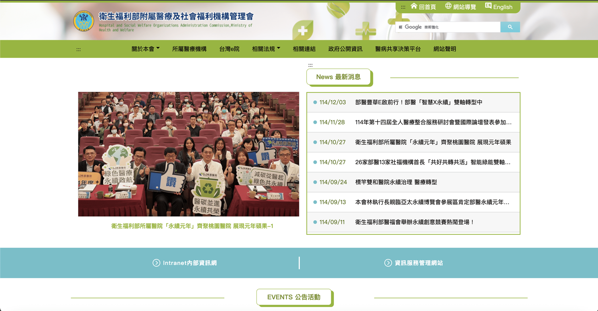
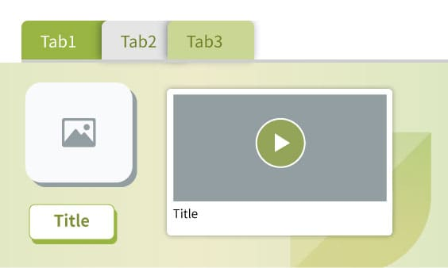

首頁設計預覽 Desktop Preview
專案背景
Background
「醫福會」負責管理全台 26 家部立醫院與多家社會福利機構。舊版網站面臨資訊架構零散、手機瀏覽體驗不佳，以及不符合最新「無障礙網站 2.1 (AA等級)」規範的問題。。
主要挑戰
Challenges
1. 資訊量龐大
需整合醫院管理、社福長照、醫事人員招募等多重業務。
2. 使用者年齡層廣
受眾包含高齡長者，字體大小與對比度需特別優化。
3. 跨裝置適應
舊版不支援 RWD，需全面重構以適應手機與平板。
設計重點
Highlights
直覺的資訊架構
透過卡片分類法 (Card Sorting) 重新梳理 Sitemap，將民眾最常用的「找醫院」、「長照服務」提升至首頁顯著位置。
無障礙友善設計
全站符合 WCAG 2.1 AA 標準。包含足夠的色彩對比度 (4.5:1)、焦點狀態設計、以及完整的鍵盤導航支援。
RWD 響應式體驗
針對手機使用者優化操作流程，將傳統的複雜表格轉化為適合小螢幕閱讀的條列式卡片 (List Views)。
色彩與元件系統
MOHW Green
主色調：象徵醫療、健康、生機
用於按鈕、連結、重點強調
Trust Blue
輔助色：象徵專業、管理、信任
用於資訊網站入口、Footer、次要按鈕
Noto Sans TC
思源黑體：清晰易讀，適合資訊型網站
Components
